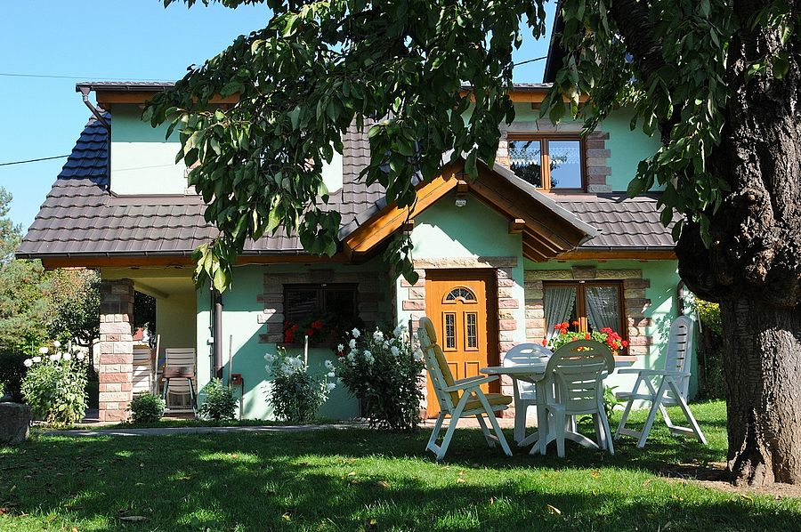

Soyez les Bienvenus
A Gertwiller capitale du Pain d’Epices, charmant petit village viticole, au cœur du Pays de Barr, au pied du Mont Sainte Odile, vous serez accueillis dans un gîte de qualité. Vous apprécierez le confort et la quiétude dans un espace de verdure arboré et clôturé. L’Alsace offre une grande variété de paysages de toutes beauté. Sa richesse culturelle, son art de vivre et la beauté de sa nature ne vous laisseront pas indifférents. Nos gîtes se trouvent à Gertwiller à 32 km de Strasbourg, 36 km de Colmar et à 6 km d’Obernai. Obernai est le berceau légendaire de Sainte Odile et la 3e ville la plus visitée après Strasbourg et Colmar. Cette ville vous enchantera par ses belles maisons à colombages qui font son attrait touristique. De là s’offrent à vous de multiples possibilités de sorties et découvertes du patrimoine alsacien, des paysages magnifiques et d’animations de toutes sortes. Entre plaine et montagne, vous disposerez d’un point de départ privilégié pour découvrir une région proposant de multiples activités de loisirs et de détente. Découvrez la route des vins, la route des châteaux, Colmar et sa petite Venise, Strasbourg capitale de Noël avec sa cathédrale. A 30 minutes, en Allemagne se trouve l’un des plus grands parcs d’attractions européen Europa-Park. Au mois de décembre laissez-vous séduire par la féerie de Noël en parcourant les nombreux marchés de Noël alsaciens.
Gîtes & Chambres

Gîte «Le Bigarreau esttout équipé et accessible à personne à mobilité réduite en toute autonomie (sans l’aide d’une tierce personne). Gite »Le Montmorency» situé à l’étage avec plancher chauffant, aspiration centralisée.
En savoir +